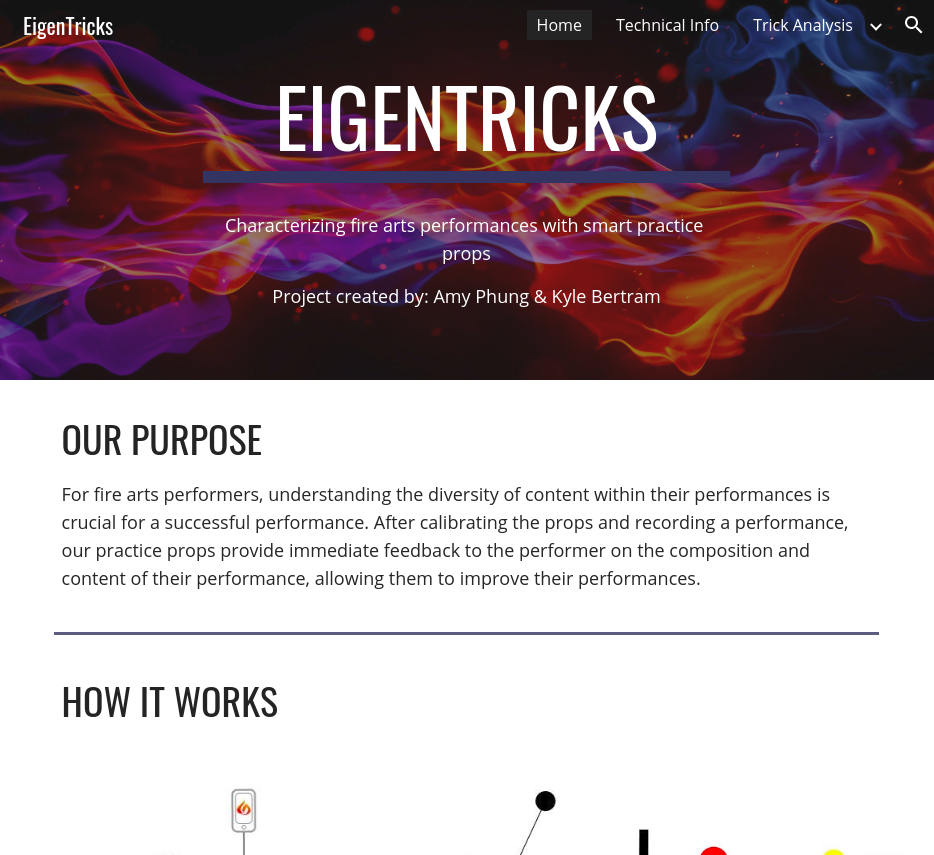
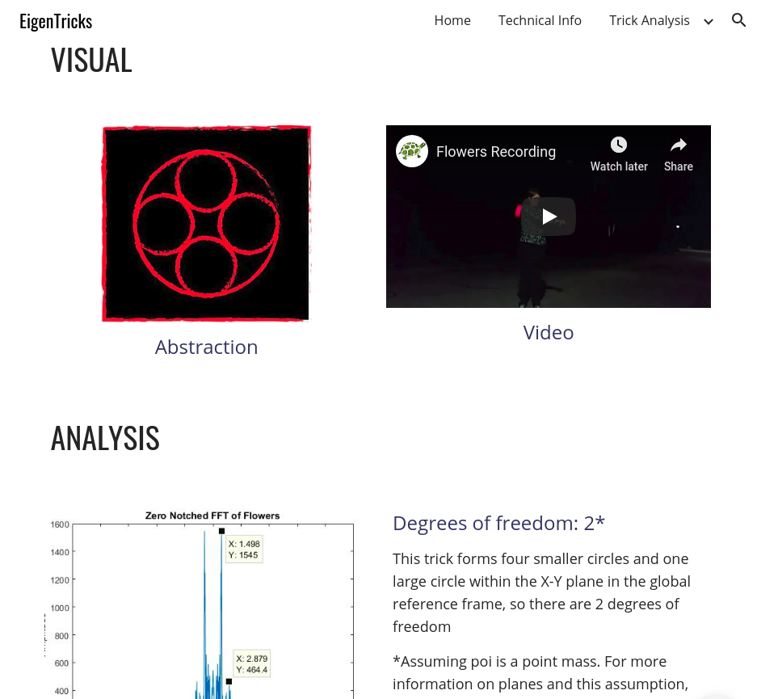

The topic of this project was “wearable sensing” and analyzing sensor data for a user’s benefit. My project partner and I were both involved with the fire arts club, so we asked ourselves - Could we collect data on someone’s poi spinning to determine what trick they were using, then use this data to help them improve their performance?
Interested to see how we were able to identify tricks with up 87% accuracy? Want to read more about the math behind our project? Or just want to know more about our project? See our project website here!
| Website Homepage | Trick Analysis |
|---|---|
|  |  |
Project Partner: Kyle Bertram
Tools used:
- MATLAB - used for trick frequency analysis and classification with eigenvectors